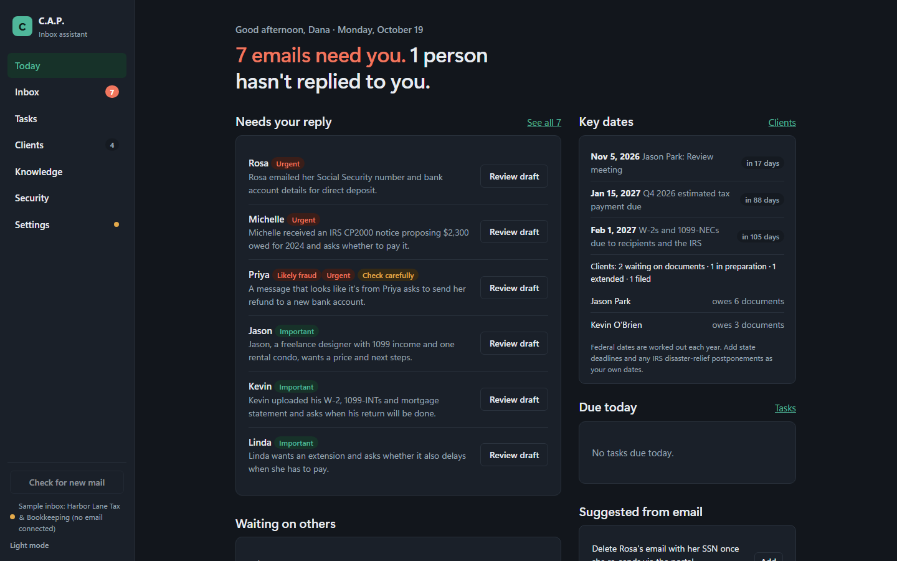

Drafts that use your facts
Replies quote the prices, hours and policies you give it, and nothing else. Every number and promise in a draft is highlighted green when it's backed by your info, amber when you should check it.
For tax firms, insurance agencies and small offices
C.A.P. sorts your business email, flags fraud, and drafts replies that quote your real prices and policies. You read every draft and send it with one click. Nothing goes to a C.A.P. server, because there isn't one.
Windows · macOS · Linux

Replies quote the prices, hours and policies you give it, and nothing else. Every number and promise in a draft is highlighted green when it's backed by your info, amber when you should check it.
Lookalike senders, fake IRS notices and "new bank details" requests are flagged at the top of the email, and you're warned before sending a Social Security or account number.
Tax firms see every client's missing documents and key dates. Insurance agencies see certificate requests and renewals. Reminder emails are written for you.
A sample tax firm's day in C.A.P. Use the arrows, or your keyboard's ← and → keys.
Step 1 of 7
Knows what's urgent (IRS notices, rejected e-files, deadlines this week), never promises a refund amount, tracks the documents each client still owes, and works out federal deadlines every year.
Spots certificate-of-insurance requests and their due dates, tracks renewals, and never confirms coverage before the carrier does.
Cleaners, studios, contractors and consultants: add your prices, policies and saved replies and C.A.P. answers the routine mail for you to approve.
C.A.P. comes with three sample businesses, so you can see drafts, fraud checks and client tracking before you connect your own email.
Download C.A.P.C.A.P. is a private AI inbox assistant for small businesses. It reads your email on your own computer, works out what needs you, and writes a reply in your voice using only facts you've given it. You stay in charge: it never sends, archives or deletes anything without your click.
Who needs a reply, who hasn't answered you, tasks due, key dates and today's calendar, with the time you've saved.
Needs reply, FYI, Snoozed and Sent. One-click drafts with tone buttons, saved replies, "remind me if no answer", snooze, and keyboard shortcuts.
Tax firms: each client's return, status, documents still owed, a timeline of dates, and a reminder email listing what's missing. Insurance: certificate requests and renewals with due dates.
Federal tax deadlines worked out for every year and moved off weekends and holidays, plus your own state deadlines and client dates, once or every year.
Business profile, saved replies, and files (PDF, Word, Excel, PowerPoint, text up to 25 MB). Ask questions and get answers with their sources.
A protection score, app lock with a PIN, fraud and sensitive-number checks, automatic clean-up of old email text, and an audit log you can download.
Pick tax & bookkeeping or insurance to add 14 ready-made saved replies, "never promise" safety rules and a document checklist. Nothing you've written is changed.
Run a free model on your own computer with Ollama, so email never leaves it, or use OpenAI, Anthropic, Google Gemini, Groq or OpenRouter with your own API key.
| How it connects | |
|---|---|
| Gmail and Google Workspace, Yahoo, iCloud, AOL, Zoho, Fastmail | Secure IMAP and SMTP with an app password (about 2 minutes to create) |
| Your own domain (you@yourbusiness.com) | IMAP and SMTP with your email password or app password |
| Outlook.com, Hotmail, Microsoft 365 | Sign in with Microsoft. Coming in a later release. |
| Google Calendar (optional) | Google sign-in, so drafts avoid times you're already booked |
Free for Windows, macOS and Linux. C.A.P. runs on your own computer: your email, clients and business details stay there. Download, unzip and open it, then try the sample inbox before you connect your email. Setup takes about ten minutes.
Loading the latest release…
Your computer will warn you the first time. This release isn't code-signed yet, so Windows shows "Windows protected your PC" and macOS says it can't check the app for malware. That's expected for an unsigned app. The setup guide shows exactly what to click. Check the SHA-256 checksum below first, so you know the file is the one we published.
Each file has a SHA-256 checksum. Run the command for your computer in the folder you downloaded to, and compare the result with the checksum next to the file above. They should match exactly.
In PowerShell:
Get-FileHash .\CAP-windows-x64.zip -Algorithm SHA256In Terminal:
shasum -a 256 ~/Downloads/CAP-macos-arm64.zipIn a terminal:
sha256sum ~/Downloads/CAP-linux-x64.tar.gz| Windows | macOS | Linux | |
|---|---|---|---|
| System | Windows 10 or 11, 64-bit | macOS 14 Sonoma or later, Apple silicon (M1 or newer) | 64-bit desktop Linux, such as Ubuntu 22.04 or newer |
| Memory | 8 GB minimum. 16 GB recommended to run the AI on your own computer. | ||
| Disk space | About 1.5 GB for C.A.P., plus 3 to 15 GB for a local AI model (not needed if you use a cloud AI key). | ||
| Internet | Needed to read and send email, and for cloud AI if you choose it. | ||
Macs with Intel processors aren't supported in this release.
About ten minutes from download to your first draft. Pick your computer:
Go to Download and save CAP-windows-x64.zip. Optional: check its checksum as shown there.
Open your Downloads folder, right-click the ZIP and choose Extract All…. Pick a lasting place, for example Documents\CAP, and click Extract. Don't run C.A.P. from inside the ZIP, and keep the CAP folder together: the app needs the _internal folder beside it.
In the CAP folder, double-click CAP.exe.
If you see "Windows protected your PC", click More info, then Run anyway. You only do this once.
Right-click CAP.exe and choose Pin to Start, or Show more options → Send to → Desktop (create shortcut).
Go to Download and save CAP-macos-arm64.zip. Safari usually unzips it for you; if not, double-click the ZIP in Downloads.
Drag CAP (CAP.app) from Downloads into your Applications folder.
Double-click CAP in Applications. macOS says it can't check the app for malware; click Done (or OK). Then open System Settings → Privacy & Security, scroll down to the message about CAP, and click Open Anyway. Enter your Mac password if asked, then click Open.
CAP opens like any other app. Drag it to your Dock to keep it there.
Go to Download and save CAP-linux-x64.tar.gz.
mkdir -p ~/Applications
tar -xzf ~/Downloads/CAP-linux-x64.tar.gz -C ~/Applications~/Applications/CAP/CAPIf the window doesn't open, your system may be missing a few common display libraries. On Ubuntu or Debian:
sudo apt install libxcb-cursor0 libxkbcommon-x11-0 libnss3 libegl1Create ~/.local/share/applications/cap.desktop containing:
[Desktop Entry]
Type=Application
Name=C.A.P.
Exec=/home/YOUR-USER-NAME/Applications/CAP/CAP
Terminal=false
Categories=Office;Email;The first time it opens, C.A.P. walks you through three steps. Here's what each one needs.
Choose a sample business (home cleaning, tax firm or insurance agency) and click Load sample inbox to see drafts, fraud flags and client tracking. Remove it any time in Settings; your own setup is kept.
Private and free, on your computer: install Ollama, then download one model. Open a terminal (PowerShell on Windows) and run one of these:
| Your computer has | Run this |
|---|---|
| 8 GB of memory | ollama pull qwen3.5:4b |
| 12 GB or more | ollama pull qwen3.5:9b |
| 16 GB or more, for the most natural writing | ollama pull gemma3:12b |
C.A.P. finds Ollama by itself. Pick the model and click Use this model.
Faster on older computers: choose Cloud and paste an API key from OpenAI, Anthropic, Google Gemini, Groq or OpenRouter. The text needed for each draft then goes to that company. See Privacy & security.
Type your email address. C.A.P. picks the right way to connect and links to the page you need. For Gmail, Yahoo, iCloud, AOL, Zoho and Fastmail, create an app password (your provider's security settings; two-step verification must be on) and paste it in. For your own domain, use your email password or app password; the server names are filled in for you and can be changed.
Outlook.com and Microsoft 365 sign-in is coming in a later release.
Add your name, business name, services and prices. Then open Knowledge to add hours, policies, links and common questions, and upload price lists or policy documents with Upload files. Drafts use only what's here.
In Settings → Your industry, choose Tax & bookkeeping or Insurance agency and click Add starter kit for 14 saved replies, safety rules and a checklist.
Open Security and turn on App lock (save your recovery code somewhere safe), choose how long to keep old email text, and turn on disk encryption for your computer (BitLocker, FileVault or LUKS).
Download the new version and replace the old CAP folder (or CAP.app). Your email history, settings and clients are stored separately, so they carry over.
Delete the CAP folder or CAP.app. To remove your data too, delete C.A.P.'s data folder:
%LOCALAPPDATA%\CAP (paste it into File Explorer's address bar)~/Library/Application Support/CAP~/.local/share/CAPSaved email and AI passwords are in your system's password store (Windows Credential Manager, macOS Keychain or your Linux keyring) under entries named for C.A.P.; delete them there.
ollama serve), then click Test and use this model again.C.A.P. was built for offices that handle tax returns, policies and Social Security numbers. Here is exactly what happens to your information.
Everything C.A.P. knows (email text, drafts, clients, tasks, your business details and files) is kept in one database file on your computer, in C.A.P.'s data folder. There is no C.A.P. account and no C.A.P. server. We never receive your email, your clients' details or anything about how you use the app.
| Goes to | What | When |
|---|---|---|
| Your email provider | Reading, sending, archiving and deleting your mail, over encrypted connections | When C.A.P. checks for mail, and when you click Send, Done or Delete |
| Nobody (local AI) | With Ollama, drafting happens on your computer | Never leaves |
| The AI company you chose (cloud AI) | The text needed to sort and draft each email, under your own API key. You can mask SSNs and account numbers first. | Only if you choose a cloud AI |
| Google Calendar | Reading your events so drafts avoid busy times | Only if you connect it |
C.A.P. has no analytics, telemetry or crash reporting, and it turns off the reporting option in the AI library it uses.
This site uses no cookies, analytics or tracking, and loads no outside fonts or scripts. It's hosted on GitHub Pages, and the Download page asks GitHub for the latest release details, so GitHub sees your visit as described in GitHub's privacy statement.
C.A.P. helps you follow good practice, but it isn't certified for any regulation and doesn't make you compliant by itself. Your obligations under the FTC Safeguards Rule, IRS Publication 4557 or state insurance rules stay with your office.
Please tell us privately through GitHub's private vulnerability reporting rather than a public issue.